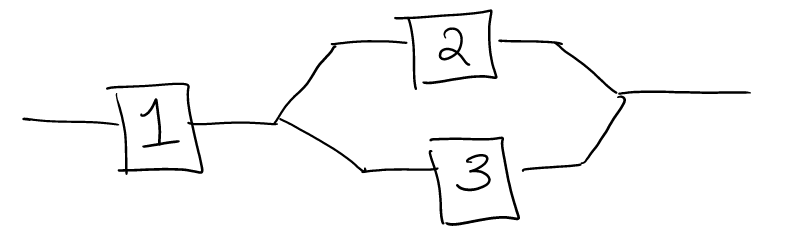

Chapter 3 Probability and Counting
Probability is a tricky subject. We have an intuitive sense about probability, but we use it in different ways, which can sometimes lead to confusion. Probability is used in at least two ways:
-to describe the relative frequency of events, e.g., what is the chance of observing 5 heads in the next ten flips of a fair coin; and,
-to communicate degrees of belief, e.g., the Packers have a 30% chance of winning the Super Bowl.
We will use probability exclusively in the sense of the first interpretation—to characterize the chances of different outcomes in repeatable trials. This sense of probability corresponds to characterizing the possible outcomes of random sampling. Although probability is often used to communicate degrees of belief there are good reasons not to use it for this purpose, but a formal, nuanced discussion of quantification of beliefs is outside our present purview.
3.1 Terminology
In our discussion of probability we will think of an experiment as the act of measuring/observing a variable one one or more samples from a population. The sample space is the set of possible realizations of the experiment. For example, if the experiment is to flip one coin and record whether it is heads or tails, then we can think of this as a random sampling from sample space \(\{H, T\}\) where the outcome may be either \(\{H\}\) or \(\{T\}\). Any subset of the sample space of an experiment is an event; for example, \(\{H\}\) and \(\{H,T\}\) are events, and so is \(\emptyset\) which denotes the “empty set,” the set of nothing.
3.2 Set relations
Events and sample spaces are sets, and we will make use of relations between sets.
-Set union: for sets/events A and B, \(A\cup B\) denotes the set of elements in at least one of \(A\) or \(B\). For example, \(\{1,2,3\}\cup\{3,4,5\} = \{1,2,3,4,5\}\).
-Set intersection: \(A\cap B\) denotes the set of elements in both A and B. For example, \(\{1,2,3\}\cap\{3,4,5\} = \{3\}\).
-Set complement: \(A^c\) denotes the set of elements in the sample space \(\mathcal{S}\) but not in \(A\). For example, if \(\mathcal{S} = \{1,2,3,4,5\}\) then \(A^c = \{4,5\}\).
-Set subtraction: \(A\backslash B\) of \(A-B\) means \(A\cap B^c\) which is the set of elements in \(A\) but not in \(B\). For example, \(\{1,2,3\}-\{3,4,5\} = \{1,2\}\).
3.2.1 Sample space example
Here’s an example to illustrate sample spaces. A gas station has six pumps, A, B, C, D, E, F.
-What is the sample space of the number of pumps in use? \(\mathcal{S} =\{0,1,2,3,4,5,6\}\).
-What is the sample space of pumps in use? \(\mathcal{S} = \{\{A,B,C,D,E,F\},\{A,B,C,D,E\}, \ldots,\{F\}, \emptyset \}\). This is the power set of \(\{A,B,C,D,E,F\}\), the set of all subsets of those pumps.
-Suppose you test pump A every day until it fails to function. What is the sample space of this experiment? \(\mathcal{S} = \{F, SF, SSF, \ldots \}\). This is a countably infinite sample space.
-You measure the amount of gas pumped by the next customer. \(\mathcal{S} = (0, ?)\), an interval with some upper bound equal to however much gas the station has available. This is an uncountably infinite sample space.
3.2.2 Set relations example
This next example illustrates set relations.

Consider this system of series and parallel components. Each component either functions/succeeds (S) or fails (F). The experiment simply observes if the system functions/succeeds or fails.
-What i the sample space in terms of the three components? \(\mathcal{S} = \{SSS, SSF, SFS, FSS, SFF, FFS, FSF, FFF\}\).
-Find the even two components succeed. \(A = \{SSF, SFS, FSS\}\).
-Find the even at leas two components succeed. \(B = \{SSF, SFS, FSS, SSS\} = A\cup \{SSS\}\).
-Find the event the system functions. \(C = \{SSS, SFS, SSF\}\).
3.3 Probability Axioms
Andrey Kolmogorov formalized rules/axioms of probability we are mostly, intuitively familiar with.
- The probability of the sample space is 1, \(P(\mathcal{S})=1\).
- Probabilities are non-negative. If \(A\subset\mathcal{S}\) then \(P(A)\geq 0\).
- Countable additivity. This last one is a bit tricky. Let’s start with an intuitive, simpler case. Suppose \(\mathcal{S} = \{1,2,3,4,5\}\). The important part is \(\mathcal{S}\) is finite and includes only different things that don’t “overlap.” Then, we know that, for example, \(P(\{1\}\cup \{2\}) = P(\{1\}) + P(\{2\})\), which says that the probability of the union of disjoint events equals the sum of probabilities of each event. Kolmogorov requires this extends to countably infinite \(\mathcal{S}\), hence the name countable additivity. Specifically, let events \(A_1\), \(A_2\), \(\ldots\) be a sequence of mutually disjoint events (none overlap, like pizza slices) so that \(A_i \cap A_j = \emptyset\) for every \(i\ne j\). Then, \[P\left(\bigcup_{i=1}^\infty A_i\right) = \sum_{i=1}^\infty P(A_i).\]